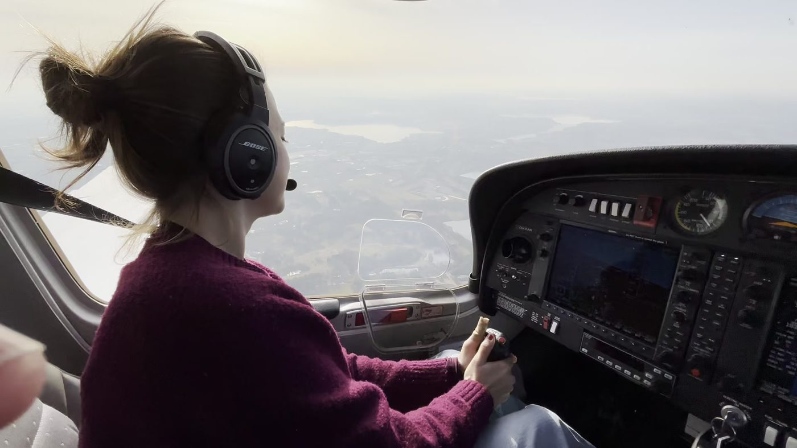
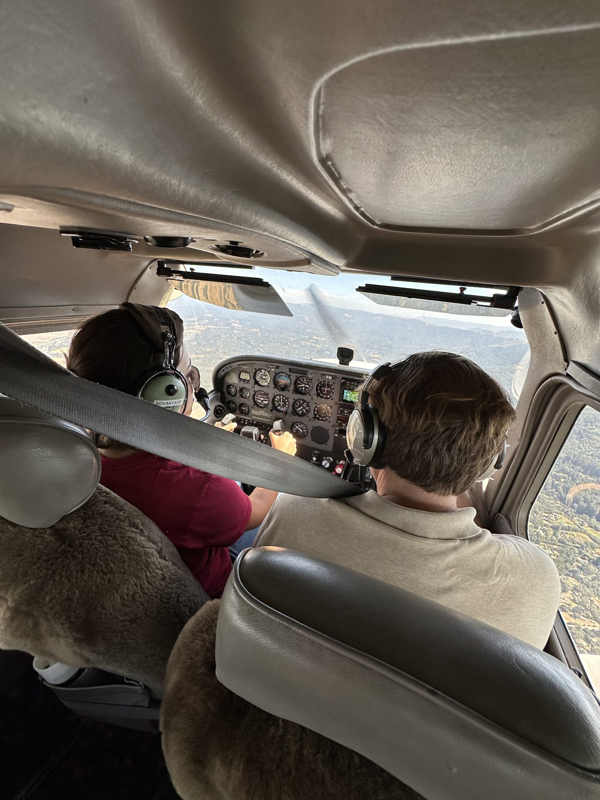
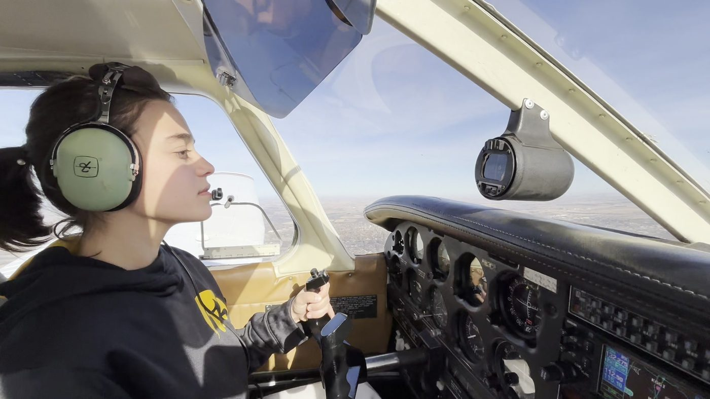
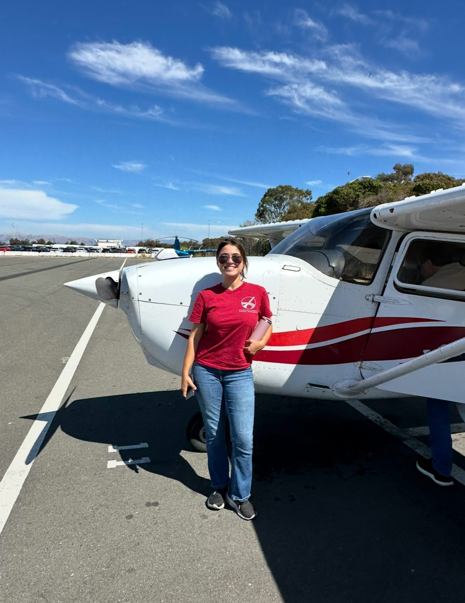

Aviation
Working toward my FAA Private Pilot License. Training across three places — California, Iowa, and Denmark — on Cessna and Diamond aircraft. Currently building hours, working the ground-school material, and learning that airplanes and rockets have more in common than they let on.

In the cockpit



Where I've flown
Aircraft
Cessna
The workhorse of general aviation training. Proven, forgiving, everywhere. If you can fly a Cessna you can fly almost anything in its class.
Diamond
Modern composite airframe, glass cockpit, efficient diesel option. Different feel in the air — slipperier, less forgiving of sloppy rudder, better visibility.
Community
Aviation has put me in rooms with people I'd never have met otherwise. At Stanford I connected with Lara Rutherford, the youngest female pilot and a fellow student, to talk flying, training paths, and what it's like to be young and in the air. Small community; big learning curve.
Why
Rockets get you above the atmosphere for about ninety seconds. Airplanes let you stay there — and then decide where to go. Flying is the thing I do when I want to be alone with physics for an afternoon. Also, half the aerospace engineering I care about happens because someone, somewhere, decided to figure out how to keep a small metal tube stable in moving air. Getting my hands on that directly was not optional.